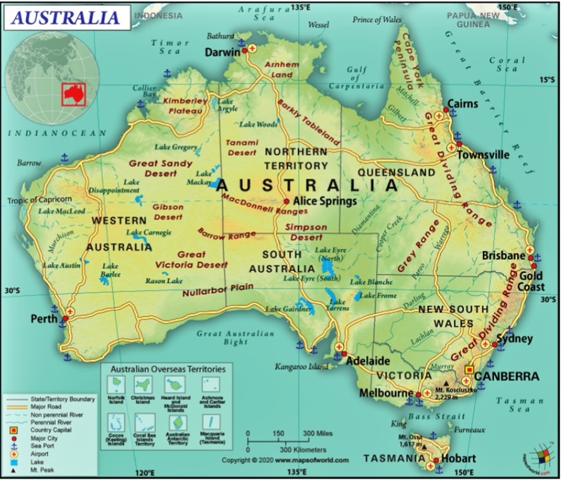
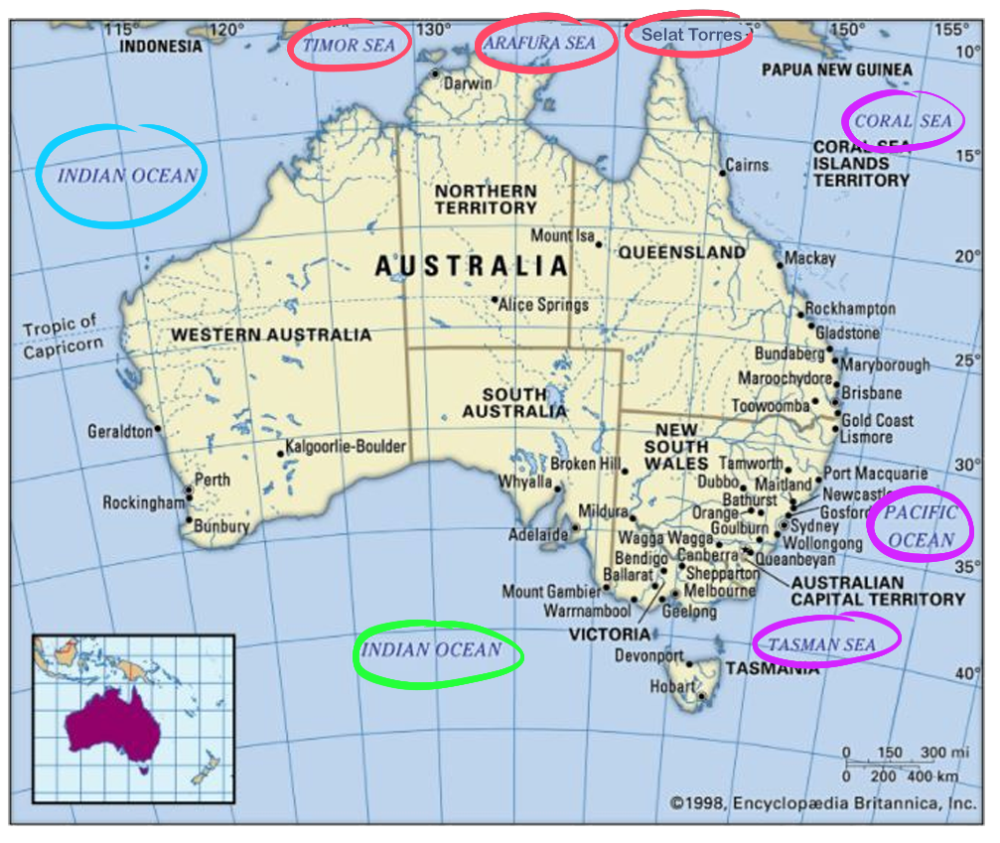
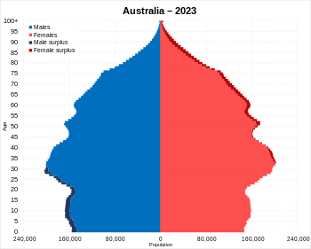

Australia adalah negara di belahan selatan yang terdiri dari daratan utama benua Australia, Pulau Tasmania,
dan beberapa pulau kecil di Samudra Hindia dan Samudra Pasifik.
Negara-negara tetangga Australia antara lain Indonesia, Timor Leste, dan Papua Nugini di utara
Kepulauan Solomon, Vanuatu, dan Kaledonia Baru di timur laut dan Selandia Baru di tenggara.
Dengan luas wilayah sampai 7.617.930 kilometer persegi,
Australia adalah negara terbesar di Oseania dan keenam terbesar di dunia.
Negara ini juga memiliki sejarah benua yang paling tua, memiliki lanskap yang sangat beragam,
termasuk gurun di pedalaman, hutan hujan tropis di timur laut, dan pegunungan di tenggara.

===============================================================================
A. ASTRONOMIS AUSTRALIA
113° BT- 155° BT dan 10° LS-43° LS
B. GEOGRAFI AUSTRALIA
Sebelah utara berbatasan dengan Laut Timor, Laut Arafuru, dan Selat Torres.
Sebelah timur berbatasan dengan Samudra Pasifik, Laut Tasman, dan Laut Coral.
Sebelah selatan berbatasan dengan Samudra Hindia.
Dan bagian barat berbatasan langsung dengan Samudera Hindia.

Keterangan warna:
-Merah = Sebelah utara
-Pink = Sebelah timur
-Hijau = Sebelah selatan
-Biru = Sebelah barat
C. DEMOGRAFI AUSTRALIA
Pada tanggal 8 Agustus 2023, populasi Australia diperkirakan mencapai 26.673.800 orang.
Dari itu, Australia menempati peringkat ke-55 dalam daftar negara terpadat di dunia,
dan juga merupakan negara paling padat penduduknya di kawasan Oseania.
Mayoritas penduduknya tinggal di daerah perkotaan, terutama di sepanjang pesisir Timur,
Tenggara, dan Selatan. Diperkirakan bahwa jumlah penduduk akan melampaui 30 juta pada tahun 2029.
Presentase penduduk Australia:

Presentase agama penduduk Australia:
- Katolik: 25.8%
- Anglikan: 18.7%
- Buddha: 2.1%
- Islam: 1.7%
- Hindu: 0.7%
===============================================================================